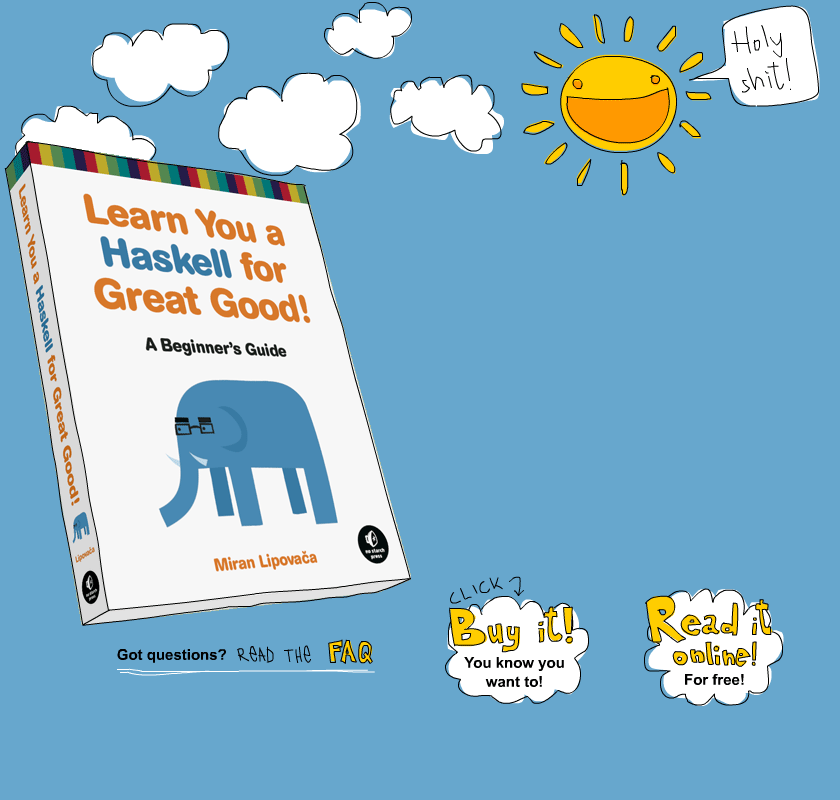

Haskell
A Gentle Introduction
Created by John Requiroso / @kazuo1231
This presentation is available on jrequiroso.github.io/haskell
Who am I?
- John Requiroso or JR
- Senior Web Developer, RedLemon Digital Media
- 28 years old
- Developers Connect (DevCon PH) CDeO Representative
- Not an expert. I just like Lambda Calculus.
Reference:
Learn You a Haskell for Great Good
We will barely scratch the surface of Haskell
What do you think about Haskell?

Quote:
Language shapes the way we think, and determines what we can think about.- Benjamin Lee Whorf
Haskell is...
Haskell is...
a lazy, functional programming language created in the late 1980’s by a committee of academics.
- MIT
- Chalmers University
- Mitre Corp
- Victoria University of Wellington
- Simon Fraser University
- University of Cambridge
- Yale University
- University of Glasgow
- Microsoft Research Ltd
Haskell is...
Based on Lambda Calculus

Haskell is...
Functional
- Functions are first-class, that is, functions are values which can be used in exactly the same ways as any other sort of value.
g(x) = x - 1
g(f(x)) = x²
f(x) = x² + 1
Functional Languages:
Haskell, Lisp, ML, Scheme, Erlang
Focuses on the high-level "what"
Imperative:
C++, Java, Python, Pascal
Focuses on the low-level "how"
Haskell is...
Pure
- No mutation! Everything (variables, data structures…) is immutable.
- Expressions never have "side effects" (like updating global variables or printing to the screen).
- Order doesn't matter!
- Easy concurrency
Haskell is...
Lazy

- Expressions are not evaluated until their results are actually needed
- It is possible to define and work with infinite data structures.
Haskell is...
Statically Typed
- Every Haskell expression has a type, and types are all checked at compile-time. Programs with type errors will not even compile, much less run.
Why use Haskell?
- Lets me think differently about programming.
- Different and possibly better or faster solutions when applied to non-functional proglangs.
- I am lazy.
Basic Haskell Syntax

Basic Haskell Syntax
Starting Out
- Install and run ghci (https://www.haskell.org/platform)
- The prompt here is
Prelude>but because it can get longer when you load stuff into the session, we're going to useghci>. If you want to have the same prompt, just type in:set prompt "ghci> ".
Basic Haskell Syntax
Simple Arithmetic is what you would expect it to be
ghci> 2 + 15
17
ghci> 49 * 100
4900
ghci> 1892 - 1472
420
ghci> 5 / 2
2.5
ghci> 50 * 100 - 4999
1
ghci> 50 * (100 - 4999)
-244950
Basic Haskell Syntax
Wrap negative numbers in parentheses
ghci> 5 * (-3)
-15
Boolean algebra with True, False, not, && and ||
ghci> not (True && True)
False
Test for equality with == and inequality with /=
ghci> 5 == 5
True
ghci> 4 /= 4
False
Basic Functions

Basic Functions
In Haskell, functions are called by writing the function name, a space and then the parameters, separated by spaces.
ghci> succ 8
9
Basic Functions
Most functions are prefix functions:
succ 8: successor (9)min 3 4: minimum of 2 values (3)max 4 5: maximum of 2 values (5)div 13 6: integral division of 2 integers (2)odd 5: tests if number is odd (True)
Prefix functions can be written as infix with backticks:
ghci> div 92 10
9
ghci> 92 `div` 10
9
Basic Functions
Function Precedence
Function application has the highest precedence of all. What that means for us is that these two statements are equivalent.
ghci> succ 9 + max 5 4 + 1
16
ghci> (succ 9) + (max 5 4) + 1
16
Basic Functions
Question:
What does the following yield and why?
succ 9 * 10
Basic Functions
Any Questions?
Loading and Compiling Haskell Files

Loading and Compiling Haskell Files
Open up your favorite text editor and punch in this function that takes a number and multiplies it by two.
doubleMe x = x + x
Save it as tutorial.hs in the folder of your choice.
For ease of access’ sake, I have saved mine in c:\Haskell
Loading and Compiling Haskell Files
Navigate to where you saved the file, compile it, and then you can use the function.
ghci> :cd c:\Haskell
ghci> :l tutorial
[1 of 1] Compiling Main ( tutorial.hs, interpreted )
Ok, modules loaded: Main.
ghci> doubleMe 2
4
ghci> doubleMe 9
18
Loading and Compiling Haskell Files
From this point forward, any code without the ghci> prompt will be added into the hs file we created and then compiled
Loading and Compiling Haskell Files
Add the following code into tutorial.hs and compile.
doubleSmallNumber x = if x > 100
then x
else x*2
The else part of Haskell’s if statement is mandatory, thus the if statement is an expression since it will always return a value and so can be plugged in anywhere!
doubleSmallNumber' x = (if x > 100 then x else x*2) + 1
Lists

Lists
Lists are created like this:
ghci> let lostNumbers = [4,8,15,16,23,42]
ghci> lostNumbers
[4,8,15,16,23,42]
ghci> let someString = "Some string"
Lists cannot have a mix of characters and numbers
Note 1: We can use the let keyword to define a name right in GHCI. Doing let a = 1 inside GHCI is the equivalent of writing a = 1 in a script and then loading it.
Note 2: Strings are just a list of characters
Lists
List Concatenation
Use ++ to put two lists together (goes through the complete list!)
ghci> [1,2,3,4] ++ [6,7,8]
[1,2,3,4,6,7,8]
ghci> "Hello" ++ " " ++ "world"
"Hello world"
Use : to prepend LHS to RHS list
ghci> 'A':" SMALL CAT"
"A SMALL CAT"
ghci> 1:[2,3,4,5]
[1,2,3,4,5]
ghci> 1:2:3:[]
[1,2,3]
Lists
Question:
What are the differences between these?
[]
[[]]
[[],[],[]]
Lists
If you want to get an element out of a list by index, use !!. The indices start at 0.
ghci> ”Software Freedom Day” !! 6
‘r’
ghci> [9.4,33.2,96.2,11.2,23.25] !! 1
33.2
Lists
Use <, <=, > and >= to lexographically compare lists
ghci> [3,2,1] > [2,1,0]
True
ghci> [3,2,1] > [2,10,100]
True
ghci> [3,4,2] > [3,4]
True
ghci> [3,4,2] > [2,4]
True
ghci> [3,4,2] == [3,4,2]
True
Comparison goes from left to right, element by element.
Lists
Any Questions?
List Operations
List Operations

head [5,4,3]: first element of a list (5)tail [5,4,3]: tail without head ([4,3])last [5,4,3]: last element of a list (3)init [5,4,3]: list without tail ([5,4])
List Operations
length [5,4,3]: number of elements (3)null [5,4,3]: tests if list is empty (False)reverse [5,4,3]: reverse list ([3,4,5])take 3 [5,4,3,2,1]: extract number of elements from list start ([5,4,3])drop 3 [5,4,3,2,1]: drop first elements of a list ([2,1])
List Operations
maximum [5,4,3,2,1]: maximum of orderable list (5)minimum [5,4,3,2,1]: minimum of orderable list (1)sum [5,4,3]: sum of number list (12)product [5,4,3]: product of number list (60)
List Operations
4 `elem` [5,4,3]: tests if an element is in list, usually infixed (True)take 10 (cycle [1,2,3]): repeat the list elements ([1,2,3,1,2,3,1,2,3,1])take 10 (repeat 5): repeat the element ([5,5,5,5,5,5,5,5,5,5])replicate 3 10: repeat the element a number of times ([10,10,10])
List Operations
Exercise:
Find out whether a list is a palindrome. A palindrome can be read forward or backward; e.g. (x a m a x).
ghci> isPalindrome [1,2,3]
False
ghci> isPalindrome "madamimadam"
True
ghci> isPalindrome [1,2,4,8,16,8,4,2,1]
True
List Operations
Any Questions?
List Ranges
List Ranges
To make a list containing all the natural numbers from 1 to 20, you just write [1..20]
ghci> [1..20]
[1,2,3,4,5,6,7,8,9,10,11,12,13,14,15,16,17,18,19,20]
ghci> ['a'..'z']
"abcdefghijklmnopqrstuvwxyz"
ghci> ['K'..'Z']
"KLMNOPQRSTUVWXYZ"
List Ranges
You can define the step size of a range:
ghci> [2,4..20]
([2,4,6,8,10,12,16,18,20])
ghci> [3,6..20]
([3,6,9,12,15,18])
ghci> [20,19..15]
([20,19,18,17,16,15])
List Ranges
You can also use ranges to make infinite lists by just not specifying an upper limit.
For now, let's examine how you would get the first 24 multiples of 13. Sure, you could do [13,26..24*13]. But there's a better way:
ghci> take 24 [13,26..]
Because Haskell is lazy, it won't try to evaluate the infinite list immediately because it would never finish. It'll wait to see what you want to get out of that infinite lists.
List Ranges
Any Questions?
List Comprehension

List Comprehension
Have you seen these kinds of equations in your Math class?

This is a basic comprehension for a set that contains the first ten even natural numbers.
The part before the pipe is called the output function, x is the variable, N is the input set and x <= 10 is the predicate.
That means that the set contains the doubles of all natural numbers that satisfy the predicate.
List Comprehension
In Haskell, this would be
ghci> [x*2 | x <- [1..10]]
[2,4,6,8,10,12,14,16,18,20]
Let's say we want only the elements which, doubled, are greater than or equal to 12. We will then add a Predicate
ghci> [x*2 | x <- [1..10], x*2 >= 12]
[12,14,16,18,20]
List Comprehension
You can have more than 1 predicate
ghci> [ x | x <- [10..20], x /= 13, x /= 15, x /= 19]
[10,11,12,14,16,17,18,20]
Comprehensions can be put inside a function
boomBangs xs = [ if x < 10 then "BOOM!" else "BANG!" |
x <- xs, odd x]
List Comprehension
Comprehensions can draw from several lists, which multiplies the lengths
ghci> [ x*y | x <- [2,3], y <- [3,4,5]]
([6,8,10,9,12,15])
_ is a dummy placeholder for a unused value
length' xs = sum [1 | _ <- xs]
List Comprehension
List comprehensions can be nested
ghci> let set = [[1,2,3],[2,3,4],[4,5]]
ghci> [ [x | x <- subset, even x] | subset <- set]
[[2],[2,4],[4]]
Try this!
ghci> let nouns = ["hobo","frog","pope"]
ghci> let adjectives = ["lazy","grouchy","scheming"]
ghci> [adjective ++ " " ++ noun | adjective <- adjectives, noun <- nouns]
List Comprehension
Any Questions?
Tuples

Tuples
Tuples can contain several types, but for the type of two Tuples to be the same, the number and types of their elements must match.
(1,2)
[(1,2), (3,2), (4,9)]
[("Johnny", "Walker", 38), ("Kate", "Middleton", 27)]
Tuples
Tuple-related functions.
fst (8,11): returns first component of a pair (8)snd (9,"Hey"): returns second component of a pair ("Hey")zip [1..3] ['a'..'c']: combine two lists to a list of tuples ([(1,'a'), (2,'b'), (3,'c')])
Tuples
Any Questions?
Combining List Comprehension and Tuples
Combining List Comprehension and Tuples

Which right triangle that has integers for all sides and all sides equal to or smaller than 10 has a perimeter of 24?
Combining List Comprehension and Tuples
Generate tuples with all combinations from 1 to 10.
triangles = [ (a,b,c) | c <- [1..10], b <- [1..10], a <- [1..10] ]
But these are not necessarily triangles! Plug in the Pythagorean formula to get triangles!
rightTriangles = [ (a,b,c) | c <- [1..10], b <- [1..10],
a <- [1..10], a^2 + b^2 == c^2]
Combining List Comprehension and Tuples
We seem to be generating the same triangles. Lets filter them out.
rightTriangles = [ (a,b,c) | c <- [1..10], b <- [1..c],
a <- [1..a], a^2 + b^2 == c^2]
That works great! Now to get the triangle with a perimeter of 24:
rightTriangles' = [ (a,b,c) | c <- [1..10], b <- [1..c],
a <- [1..b],
a^2 + b^2 == c^2,
a+b+c == 24]
Anyone wanna take a break?
Or maybe ask some questions?
Types

Types
Some of these are advanced concepts so we will just quickly skim through.
Types
Types always start with an uppercase letter
Use :t to get a type of something
ghci> :t 'a'
'a' :: Char
ghci> :t "HELLO"
"HELLO" :: [Char]
ghci> :t (True, 'a')
(True,'a') :: (Bool, Char)
Types
When writing our own functions, we can choose to give them an explicit type declaration.
All functions should use a type declaration with :: ("has type of"). Multiple arguments are also separeted with -> just like the type declaration itself.
removeUppercase :: [Char] -> [Char]
removeUppercase :: String -> String --(same as above)
addThree :: Int -> Int -> Int -> Int
addThree x y z = x + y + z
This is generally considered to be good practice except when writing very short functions.
From here on, we'll give all the functions that we make type declarations.
Types
Here are the common types
Int: IntegerInteger: Integer (big)Float: Floating pointDouble: Floating point with double precisionBool: BooleanChar: Character- Tuples
Ordering: Can beGT,LTorEQ
Types
Type variables can be used in function declarations. They stand for a type. Without a class constraint they mean "any type"
ghci> :t head
head :: [a] -> a
ghci> :t fst
fst :: (a, b) -> a
Types
Typeclasses are like interfaces for types. If a type is part of a typeclass it implements that class' behavior. The => symbol separates the class constraint from the declaration:
ghci> :t (==)
(==) :: (Eq a) => a -> a -> Bool
Eq: supports equality testingOrd: can have orderingShow: can be presented as stringRead: can be read from a stringEnum: ordered type which can be enumeratedBounded: have an upper and lower boundNum: can act like a numberIntegral: can act like an integral numberFloating: can act like a floating point number
Syntax in Functions
Syntax in Functions - Pattern Matching
Functions can be defined with pattern matching.
Patterns make sure that the input matches a specified pattern.
The first matching pattern is executed.
There should always be a catch-all pattern at the end.
Syntax in Functions - Pattern Matching
lucky :: (Integral a) => a -> String
lucky 7 = "LUCKY NUMBER SEVEN!"
lucky x = "Sorry, you're out of luck, pal!"
factorial :: (Integral a) => a -> a
factorial 0 = 1
factorial n = n * factorial (n - 1)
addVectors :: (Num a) => (a, a) -> (a, a) -> (a, a)
addVectors (x1, y1) (x2, y2) = (x1 + x2, y1 + y2)
head' :: [a] -> a
head' [] = error "Can't call head on an empty list, dummy!"
head' (x:_) = x
Syntax in Functions - Pattern Matching
Using Typeclasses in functions
-- Show is any type that can be presented as string
tell :: (Show a) => [a] -> String
tell [] = "The list is empty"
tell (x:[]) = "The list has one element: " ++ show x
tell (x:y:[]) = "The list has two elements: " ++ show x ++ " and " ++ show y
tell (x:y:_) = "This list is long. The first two elements are: " ++ show x ++ " and " ++ show y
-- Num is any type that can act like a number
length' :: (Num b) => [a] -> b
length' [] = 0
length' (_:xs) = 1 + length' xs
sum' :: (Num a) => [a] -> a
sum' [] = 0
sum' (x:xs) = x + sum' xs
Syntax in Functions - Pattern Matching
The as pattern is used to reference the "whole thing": Put a name followed by @ in front of the pattern:
capital :: String -> String
capital "" = "Empty string, whoops!"
capital all@(x:xs) = "The first letter of " ++ all ++ " is " ++ [x]
Syntax in Functions - Guards
Guards are similar to if statements and check for boolean conditions. There's no = after the function name:
bmiTell :: (RealFloat a) => a -> String
bmiTell bmi
| bmi <= 18.5 = "You're underweight, you emo, you!"
| bmi <= 25.0 = "You're supposedly normal. Pffft, I bet you're ugly!"
| bmi <= 30.0 = "You're fat! Lose some weight, fatty!"
| otherwise = "You're a whale, congratulations!"
Guards can be combined with patterns: If all guards of a function evaluate to False, evaluation falls through to the next pattern
Syntax in Functions - Guards
Guards can have as many parameters as we want
bmiTell :: (RealFloat a) => a -> a -> String
bmiTell weight height
| weight / height ^ 2 <= 18.5 = "You're underweight, you emo, you!"
| weight / height ^ 2 <= 25.0 = "You're supposedly normal. Pffft, I bet you're ugly!"
| weight / height ^ 2 <= 30.0 = "You're fat! Lose some weight, fatty!"
| otherwise = "You're a whale, congratulations!"
max' :: (Ord a) => a -> a -> a
max' a b
| a > b = a
| otherwise = b
myCompare :: (Ord a) => a -> a -> Ordering
a `myCompare` b
| a > b = GT
| a == b = EQ
| otherwise = LT
Syntax in Functions - Guards
Guards can use a where block to define functions that are only visible inside the guard function
bmiTell :: (RealFloat a) => a -> a -> String
bmiTell weight height
| bmi <= skinny = "You're underweight, you emo, you!"
| bmi <= normal = "You're supposedly normal. Pffft, I bet you're ugly!"
| bmi <= fat = "You're fat! Lose some weight, fatty!"
| otherwise = "You're a whale, congratulations!"
where bmi = weight / height ^ 2
skinny = 18.5
normal = 25.0
fat = 30.0
Syntax in Functions - Guards
Combined with a pattern match
bmiTell :: (RealFloat a) => a -> a -> String
bmiTell weight height
| bmi <= skinny = "You're underweight, you emo, you!"
| bmi <= normal = "You're supposedly normal. Pffft, I bet you're ugly!"
| bmi <= fat = "You're fat! Lose some weight, fatty!"
| otherwise = "You're a whale, congratulations!"
where bmi = weight / height ^ 2
(skinny, normal, fat) = (18.5, 25.0, 30.0)
Syntax in Functions - Guards
A few more examples
-- using _
initials :: String -> String -> String
initials firstname lastname = [f] ++ ". " ++ [l] ++ "."
where (f:_) = firstname
(l:_) = lastname
-- using list comprehension
calcBmis :: (RealFloat a) => [(a, a)] -> [a]
calcBmis xs = [bmi w h | (w, h) <- xs]
where bmi weight height = weight / height ^ 2
Syntax in Functions - Let Bindings
Let bindings are similar to where bindings. Their form is let <bindings> in <expression>.
cylinder :: (RealFloat a) => a -> a -> a
cylinder r h =
let sideArea = 2 * pi * r * h
topArea = pi * r ^2
in sideArea + 2 * topArea
Syntax in Functions - Let Bindings
The difference between let bindings and where bindings is that let bindings are expressions, just like if statements:
ghci> 4 * (if 10 > 5 then 10 else 0) + 2
42
ghci> 4 * (let a = 9 in a + 1) + 2
42
Syntax in Functions - Let Bindings
Any Questions?
Recursion

Recursion
Recursion is actually a way of defining functions in which the function is applied inside its own definition. Definitions in mathematics are often given recursively.
factorial :: (Integral a) => a -> a
factorial 0 = 1
factorial n = n * factorial (n - 1)
length' :: (Num b) => [a] -> b
length' [] = 0
length' (_:xs) = 1 + length' xs
sum' :: (Num a) => [a] -> a
sum' [] = 0
sum' (x:xs) = x + sum' xs
Let's create Quicksort!
A sorted list is a list that has all the values smaller than (or equal to) the head of the list in front (and those values are sorted), then comes the head of the list in the middle and then come all the values that are bigger than the head (they're also sorted).
Quicksort

Quicksort
Our quicksort function will accept an input which can be ordered (class type of Ord)
It will accept a list as input and will output a list
quicksort :: (Ord a) => [a] -> [a]
The Edge Case: An empty list is a sorted list.
quicksort [] = []
Quicksort
The function will take the first element of the list - the head
quicksort (x:xs)
The headless list will then be divided into two - greater than the head and less than the head
let smallerSorted = quicksort [a | a <- xs, a <= x]
biggerSorted = quicksort [a | a <- xs, a > x]
The head will then be placed in the middle of both of them
in smallerSorted ++ [x] ++ biggerSorted
Quicksort
Putting everything together we get:
quicksort :: (Ord a) => [a] -> [a]
quicksort [] = []
quicksort (x:xs) =
let smallerSorted = quicksort [a | a <- xs, a <= x]
biggerSorted = quicksort [a | a <- xs, a > x]
in smallerSorted ++ [x] ++ biggerSorted
Let's give it a small test run to see if it appears to behave correctly.
ghci> quicksort [10,2,5,3,1,6,7,4,2,3,4,8,9]
[1,2,2,3,3,4,4,5,6,7,8,9,10]
ghci> quicksort "the quick brown fox jumps over the lazy dog"
" abcdeeefghhijklmnoooopqrrsttuuvwxyz"
Quicksort
This is what Quicksort looks like in most non-functional languages
void f(int a[], int lo, int hi)
{
int h, l, p, t;
if (lo < hi) {
l = lo;
h = hi;
p = a[hi];
do {
while ((l < h) && (a[l] <= p))
l = l+1;
while ((h > l) && (a[h] >= p))
h = h-1;
if (l < h) {
t = a[l];
a[l] = a[h];
a[h] = t;
}
} while (l < h);
a[hi] = a[l];
a[l] = p;
f( a, lo, l-1 );
f( a, l+1, hi );
}
}
Higher Order Functions
Functions can take functions as arguments

Maps
The map function takes a function and a list and returns a list with the function applied to every element.
ghci> map even [1..10]
[False,True,False,True,False,True,False,True,False,True]
ghci> map (+5) [1..10]
[6,7,8,9,10,11,12,13,14,15]
Filter
A filter refines a list using a predicate.
ghci> filter even [1..10]
[2,4,6,8,10]
ghci> filter (>5) [1..10]
[6,7,8,9,10]
Anonymous Function
We can use λ-calculus to define a function
ghci> map (\x -> x*x) [1..10]
[1,4,9,16,25,36,49,64,81,100]
This notation is inspired from lambda calculus
λx.(x*x)
Haskell forces you to think differently.
Without the usual assignments, loops and control structures, you will find it hard to keep thinking in an iterative way.
It asks you to focus on what is done, not how it is done.
Elegant
Quote:
A language that doesn’t affect the way you think about programming, is not worth knowing.- Alan Perlis
Thanks for Listening!
Created by John Requiroso / @kazuo1231